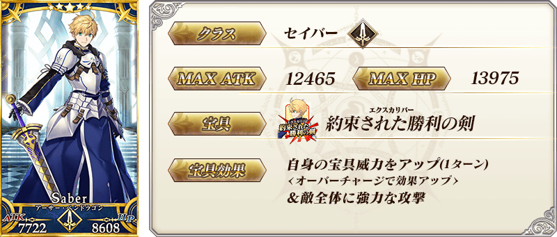
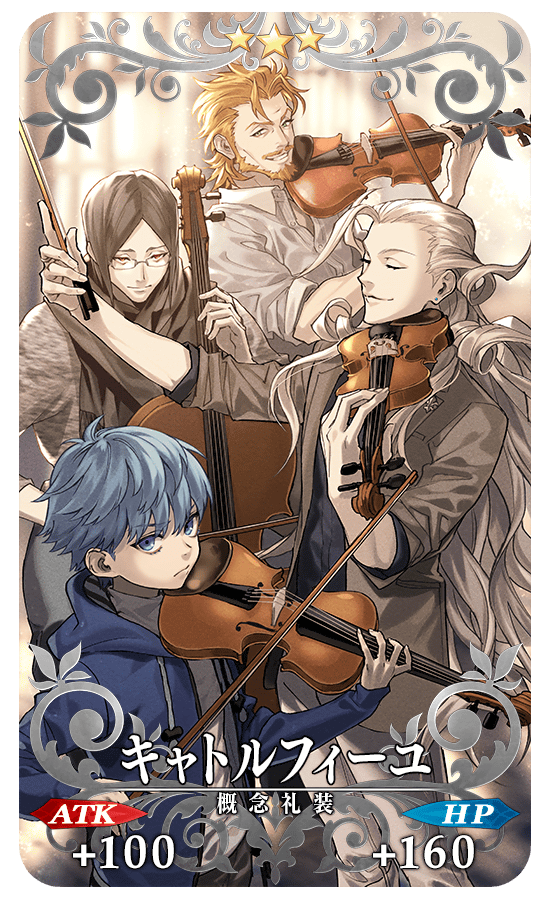

◆「2300萬DL記念Pick Up召喚」期間◆
期間:2021年2月24日(三) 17:00～3月10日(三) 11:59
舉辦期間限定「2300萬DL記念Pick Up召喚」！
為了記念2300萬DL突破，下述的從者Pick Up！
▼期間限定從者
・★5(SSR)亞瑟・潘德拉剛〔Prototype〕
另外，2017年的「迦勒底男性精選2017Pick Up召喚(每日交替)」中登場的下述期間限定概念禮裝Pick Up！ ・★5(SSR)熱砂の語らい ・★5(SSR)探偵ヱドモン～春先旅情編～ ・★5(SSR)アズ・ユー・ウィッシュ ・★4(SR)カフェ・キャメロット ・★4(SR)アウトレイジ ・★4(SR)オペレーション・フィオナ ・★3(R)キャトルフィーユ ・★3(R)ネヴァーランド ・★3(R)ラ・シエスタ
Pick Up期間中，Pick Up對象從者與概念禮裝的出現機率提升！
詳情請在聖晶石召喚畫面左下的召喚詳細確認。
11次召喚中確定1張★4(SR)以上和確定1位★3(R)以上的從者！ ※確定★4(SR)以上包含從者和概念禮裝。
◆有關從者的注意◆
※下述的從者在Pick Up期間結束後不會追加到故事召喚。
・★5(SSR)亞瑟・潘德拉剛〔Prototype〕
◆有關概念禮裝的注意◆
※下述的概念禮裝，Pick Up期間中也能靠友情點數召喚獲得。
・★3(R)キャトルフィーユ
・★3(R)ネヴァーランド
・★3(R)ラ・シエスタ
※在自動變還設定登錄★3(R)概念禮裝的情況，下述的概念禮裝會變成自動變還的對象。
・★3(R)キャトルフィーユ
・★3(R)ネヴァーランド
・★3(R)ラ・シエスタ
 ※上述「★5(SSR)亞瑟・潘德拉剛〔Prototype〕」的卡面為靈基再臨第1階段。

|
★★★★★SSR |

|
★★★★★SSR |

|
★★★★★SSR |

|
★★★★SR |

|
★★★★SR |

|
★★★★SR |
|  |
★★★R |

|
★★★R |

|
★★★R |
 ※上述「★5(SSR)亞瑟・潘德拉剛〔Prototype〕」的立繪為靈基再臨第1階段。
※上述「★5(SSR)亞瑟・潘德拉剛〔Prototype〕」的立繪為靈基再臨第1階段。
介紹「★5(SSR)亞瑟・潘德拉剛〔Prototype〕」的寶具演出！
在「Fate/Grand Order」官方網站內的公告中，以影片公開寶具演出，敬請確認。

強化「★5(SSR)亞瑟・潘德拉剛〔Prototype〕」的特別關卡「從者強化關卡」，在迦勒底之門永久追加。
不僅進行對象從者的強化，也可獲得聖晶石做為關卡通過報酬。
※請注意在從者強化關卡沒有文字冒險部份。
◆追加時間◆
2021年2月24日(三) 17:00～
◆開放條件◆
持有的強化對象從者，必須使其最終再臨。
※未持有對象從者的話，不會出現關卡。
※關卡沒有舉辦期限。

其他還有，「2300萬DL突破宣傳活動」同時舉辦！
關於詳情，請自下述橫幅確認。
■「2300萬DL突破宣傳活動」詳細情報